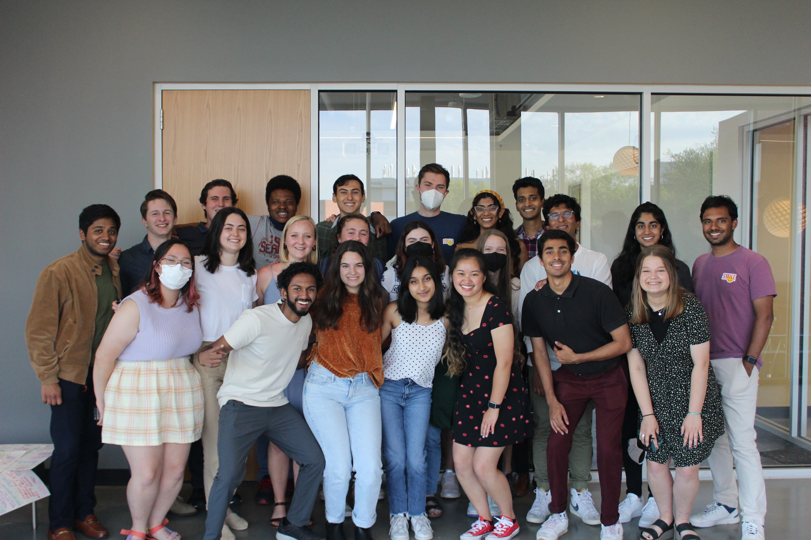
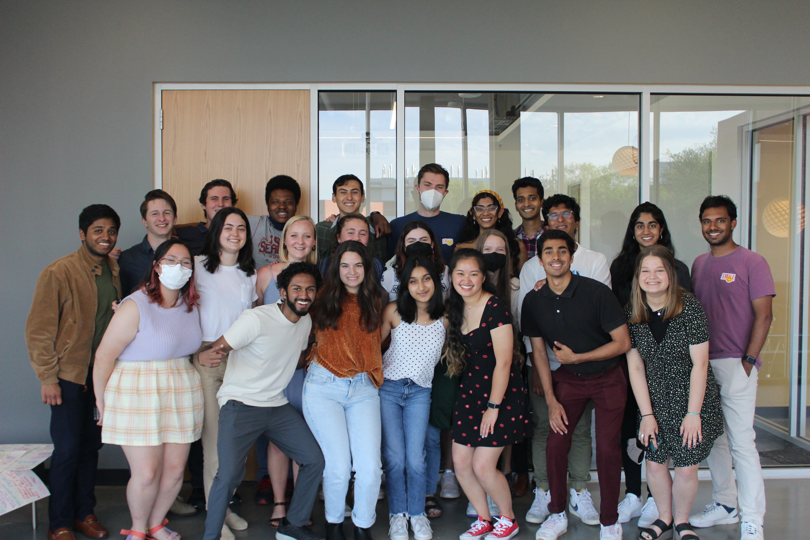
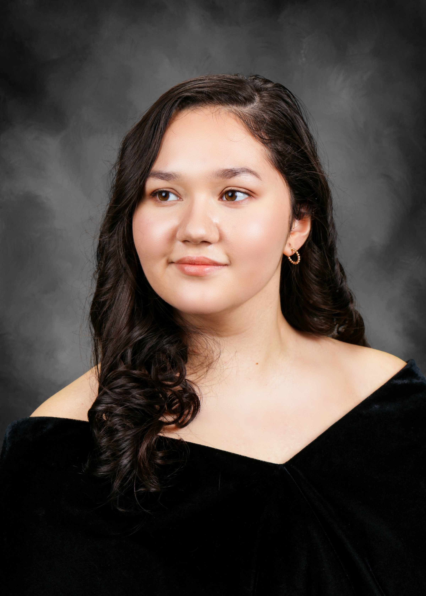

About
My name is Amanda Cowan and I am a third year Computational Media major candidate at the Georgia Institute of Technology, with Media and Film & Media Studies as my selected threads. Additionally, I have a minor in Russian to help further my understanding and connection to global cultures. Outside of class, I spend much of my time crocheting, reading, and watching movies! I find that watching film and television help me to understand others based on the stories that people choose to tell. Feel free to link with me on Letterboxd!
 

